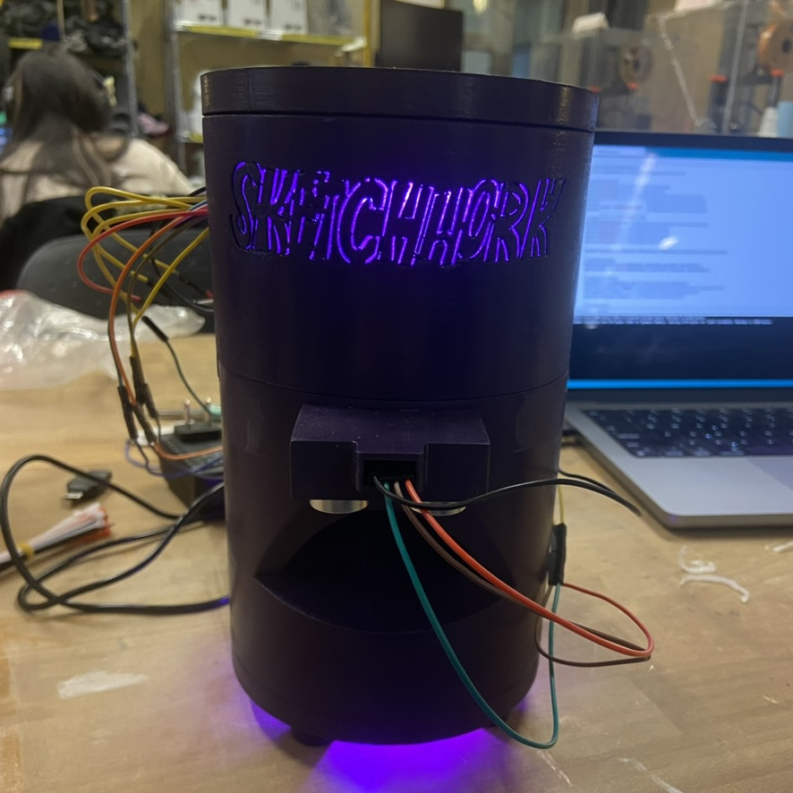

Automated Guitar Pick Dispenser
An Arduino powered guitar pick dispenser designed and constructed by me in OnShape. Utilizes stepper motors and ultrasonic distance sensors to operate similarly to a soap dispenser. Solves my pet peeve of dropping guitar picks while playing!